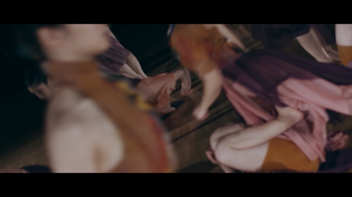
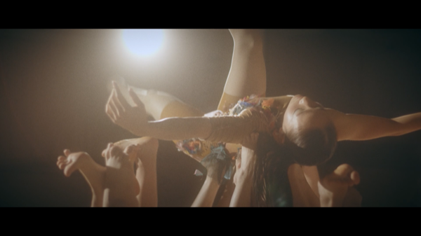
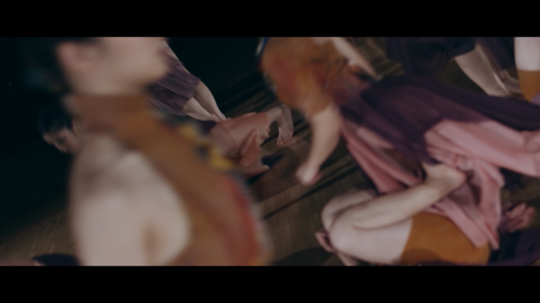
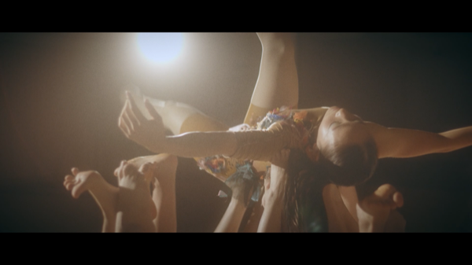
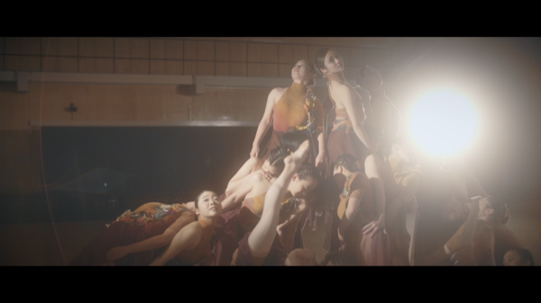
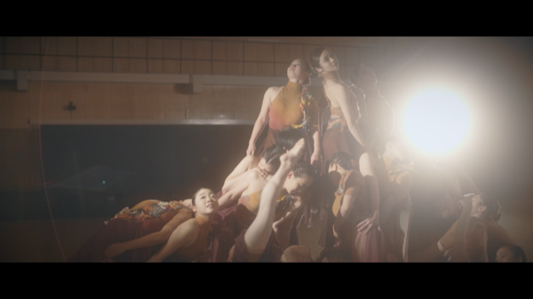
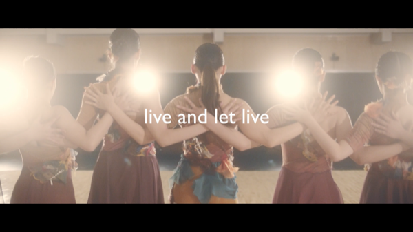
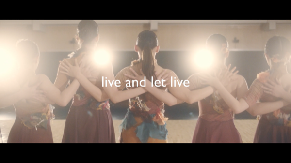

live and let live
2021.03 / Dance Film / Director, Chinematograher, Lighting & Colorlist / 6min

 



 

 

筑波大学ダンス部の映像作品。
コロナ禍における新たな取り組み。
Credits
- Director : Tomoya Onuki
- Editor : Kaito Shidaraku
- Producer : Shinnosuke Ando
- Asisstant : Yuichi Kato / Gaku Matsumura / Aomi Nowatari
- Choreographer : Misato Ikeda / Saki Ozawa / Miyu Suganuma / Chiharu Hayami / Yui Miyakawa / Ayumi Moteki / Aya Morita / Kana Yamaguchi
- Dancer : Misato Ikeda / Saki Ozawa / Miyu Suganuma / Chiharu Hayami / Yui Miyakawa / Ayumi Moteki / Aya Morita / Kana Yamaguchi / Kaori Inoue / Kotoko Ono / Riho Kakinohana / Syuka Shimizu / Syoya Hukunaga / Hiyori Yasunaga / Naho Akahoshi / Yuri Kazama / Yuu Komatsuzaki / Manami Saito / Kana Sakamoto / Kurin Takahashi / Hibiki Baba / Mao Matsumura / Mai Miki / Chihiro Murakoshi
- Costume Designer : Kaori Tamura
- Special Thanks : Ymi Terayama / Motoko Hirayama / Maya Oshima
- Sta2one instagram
- Univercity of Tsukuba Dance Club Official HP